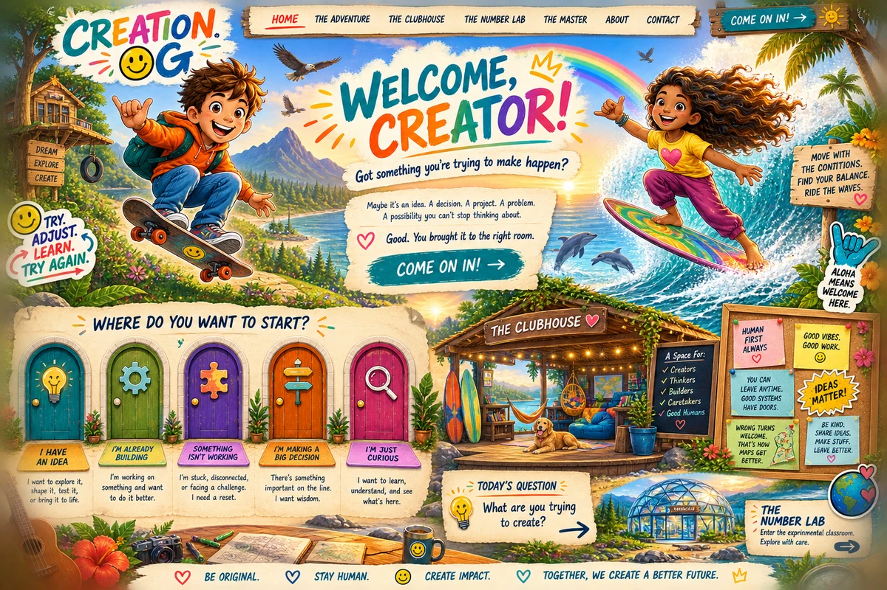

THE ADVENTURE CONTINUES
Bring the idea. Enter the field.
Let reality reply. Create again.
Creation OG keeps the deeper architecture available without making the Human carry all of its complexity at once.
THE CLUBHOUSE
A place prepared for Humans.
Hospitality comes first. Curiosity, agency, breathing room, clear perception, correction, rest and return are part of the architecture.
THE MASTER
The joy is visible. The architecture is felt. The Human remains free.
The system carries more of the repeatable complexity while consequential authority remains Human.
ABOUT CREATION OG
A Human-Led Operating Guide for Consequential Creation.
Freedom to create. Compassion for what creation touches. Responsibility for what creation becomes. Freedom to learn and create again.
COME AS YOU ARE
Creation OG is still becoming.
This is a bounded first public expression. The experience will continue learning from the Humans who encounter it.